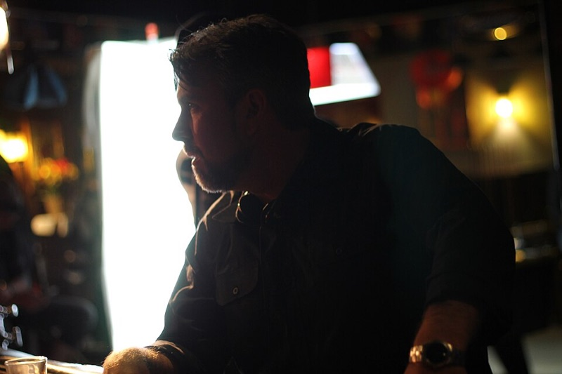
Le Réalisateur
Découpage de scénario, grammaire du plan, direction d'acteurs, style personnel.
● DisponibleL'Assistant Réalisateur
Plan de travail, annonces de plateau, tenue du planning, sécurité.
● Disponible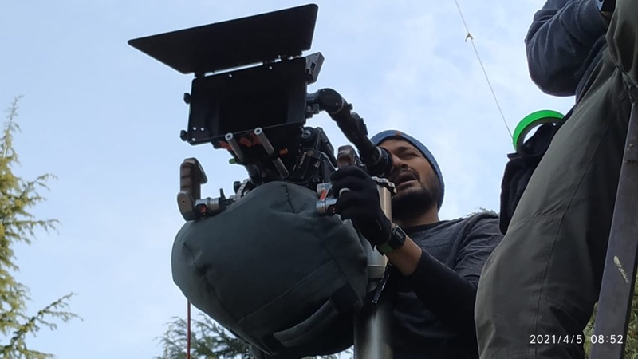
Le Directeur de la photographie
Lumière, optique, mouvement de caméra, dialogue avec la mise en scène.
● Disponible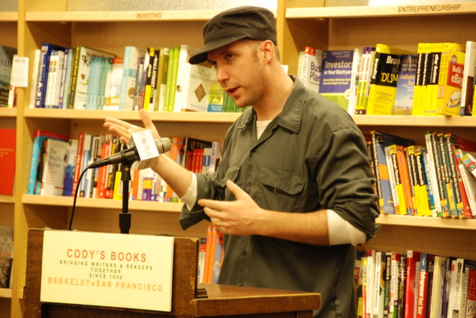
Le Scénariste
Structure, personnage, dialogue, formatage professionnel.
● Disponible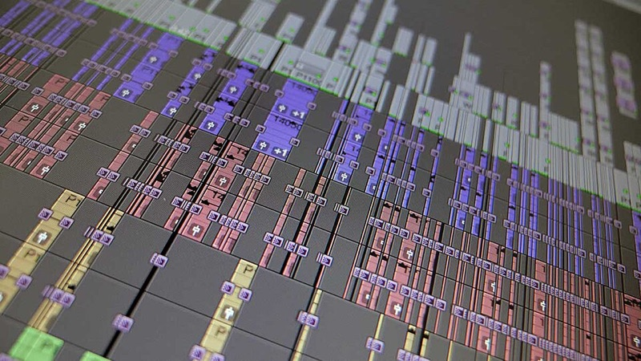
Le Monteur
Rythme, raccords, construction de la tension, montage son image.
● DisponibleL'Ingénieur du son
Prise de son de tournage, sound design, mixage.
● Disponible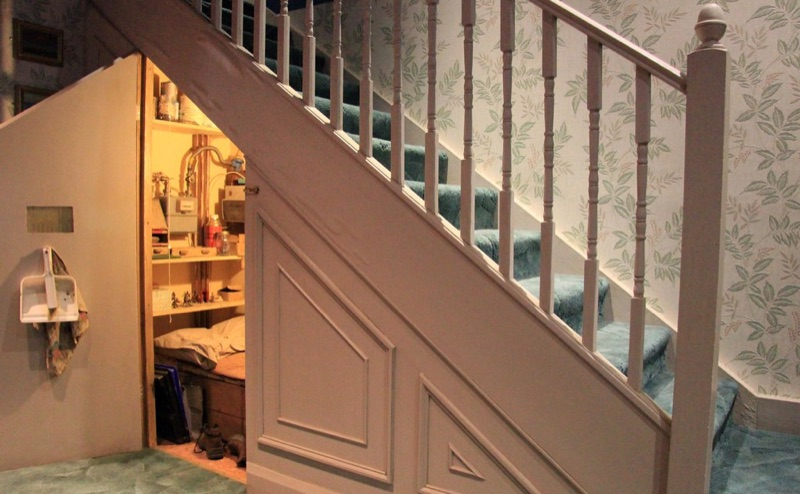
Le Décorateur
Direction artistique, moodboard, symbolisme des objets, budget.
● Disponible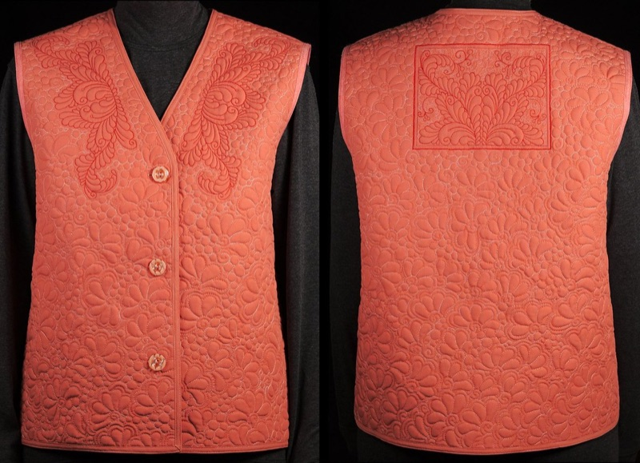
La Costumière
Silhouette de personnage, continuité, recherche historique.
● DisponibleLe Directeur de casting
Lecture d'audition, association acteur-personnage, négociation.
● DisponibleLe Producteur
Financement, planning, gestion de risque, relation studio.
● Disponible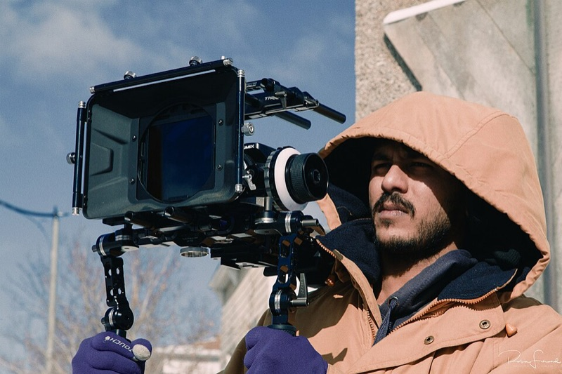
Le Régisseur général
Repérages, logistique de tournage, sécurité du plateau.
● Disponible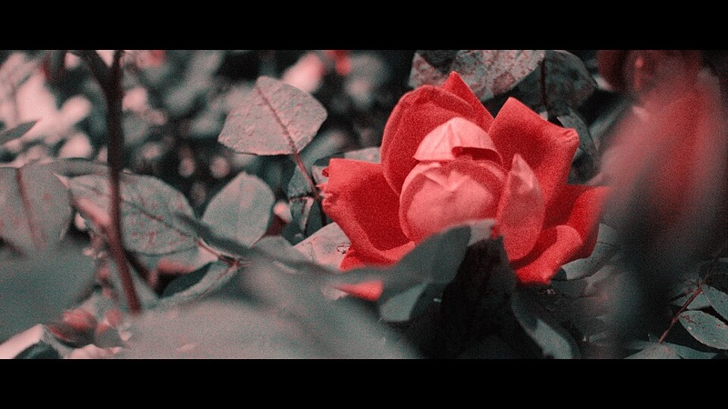
L'Étalonneur
Grading, look final, cohérence colorimétrique du film.
● DisponibleLe Chargé de Production
Bureau de production, call sheets, logistique quotidienne.
● DisponibleL'Animateur IA
Faire des films avec l'IA — pipeline, prompts, éthique.
● Disponible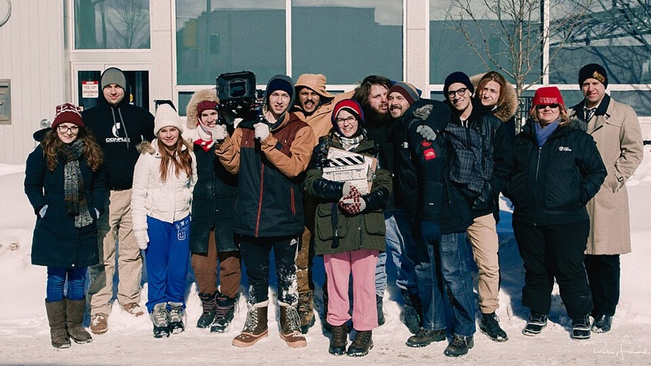
Le Directeur de Production
Découpage budgétaire, stripboard, supervision des chefs de poste.
● Disponible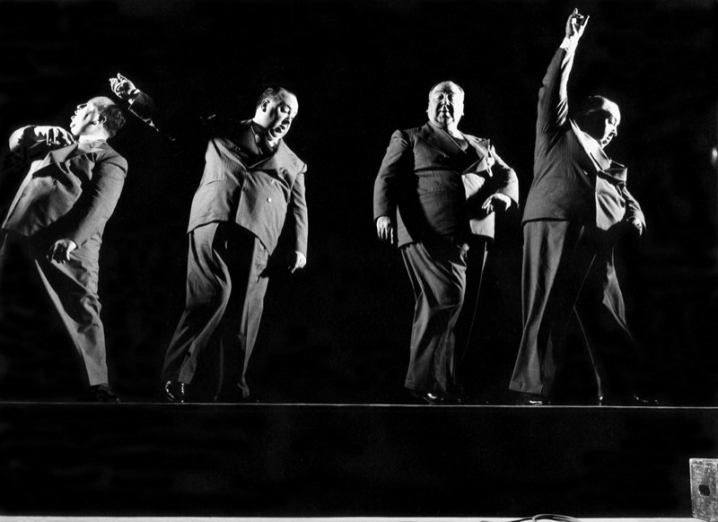
L'Acteur Vivant
Présence, corps, vérité émotionnelle, architecture du personnage.
● Disponible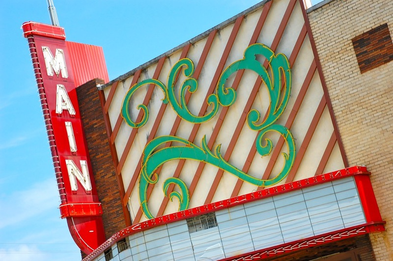
Communication d'un film
Stratégie digitale, relations presse, activations, identité de marque — communiquer un film comme le film qu'il est.
● DisponibleLe Chef Électricien
Sources, plan de charge, diffusion, sécurité — fabriquer concrètement la lumière voulue par le DP.
● Disponible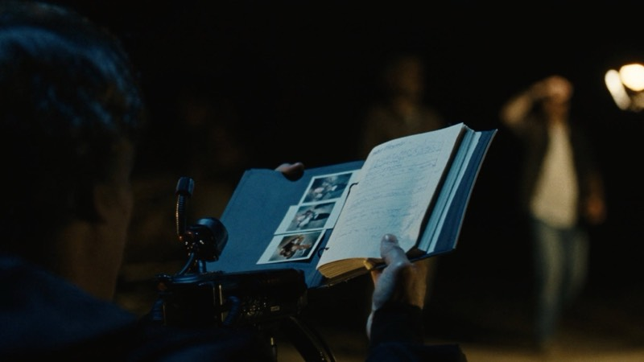
Le Scripte
Rapport scripte, raccords, circled take, minutage — la mémoire du film, plan par plan.
● DisponibleSmartphone Filmmaking
Filmer avec son téléphone comme un cinéaste — réglages manuels, son, lumière disponible, workflow mobile.
● Disponible